不是航拍与相机的合集，
而是同一段路的不同目光。
这组照片来自 2025 年的一次川藏线旅程。镜头有时贴近地面，有时升到山谷上空， 但它们记录的始终是同一件事：道路怎样穿过群山，人又怎样在不断变化的海拔里重新理解距离。
这里先整理照片能够确认的地点与视觉感受。那些发生在路上的人、谈话和意外， 会在记忆被重新写下时，继续补进这篇仍在生长的手记。
- Year
- 2025
- Frames
- 12
- Places
- 汶川 · 塔公 · 姊妹湖 · 色达 · 纳木错 · 拉萨
The road begins
公路进入群山
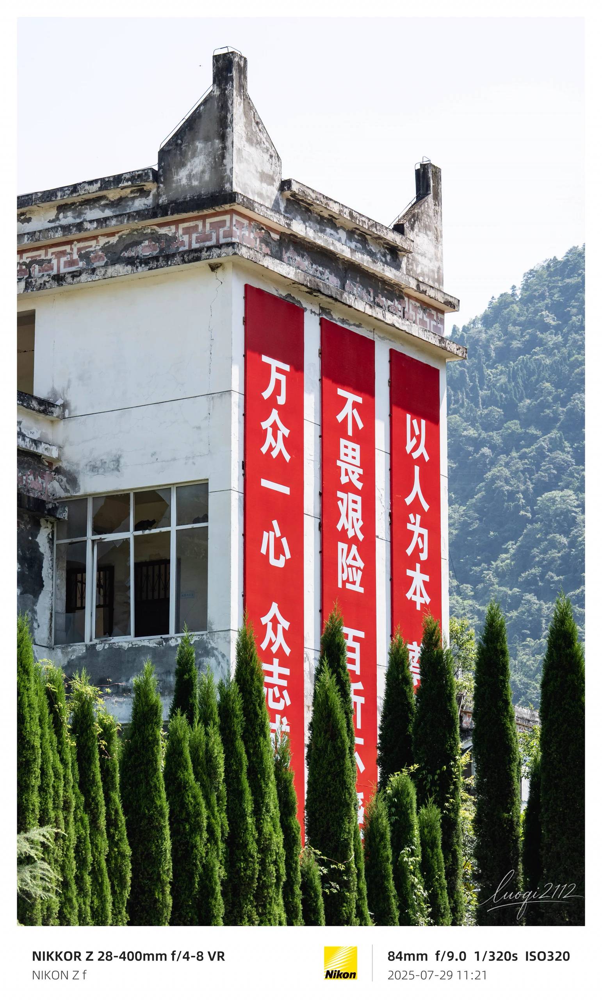
旅程从河谷与公路之间展开。山体逐渐靠近，道路不再只是连接两个地点的线， 而成为观看风景本身的一部分。
低处的建筑、转弯后的山脊、被云影切开的坡面不断改变画面的比例。 当熟悉的尺度开始失效，前方才真正显得遥远。
上路以后，距离不再只由公里数决定。
Above the altitude
高处，湖泊重新描出大地
从空中看，山脊、湖岸与公路不再彼此遮挡。它们同时出现在画面里， 像是地形亲手留下的线稿。
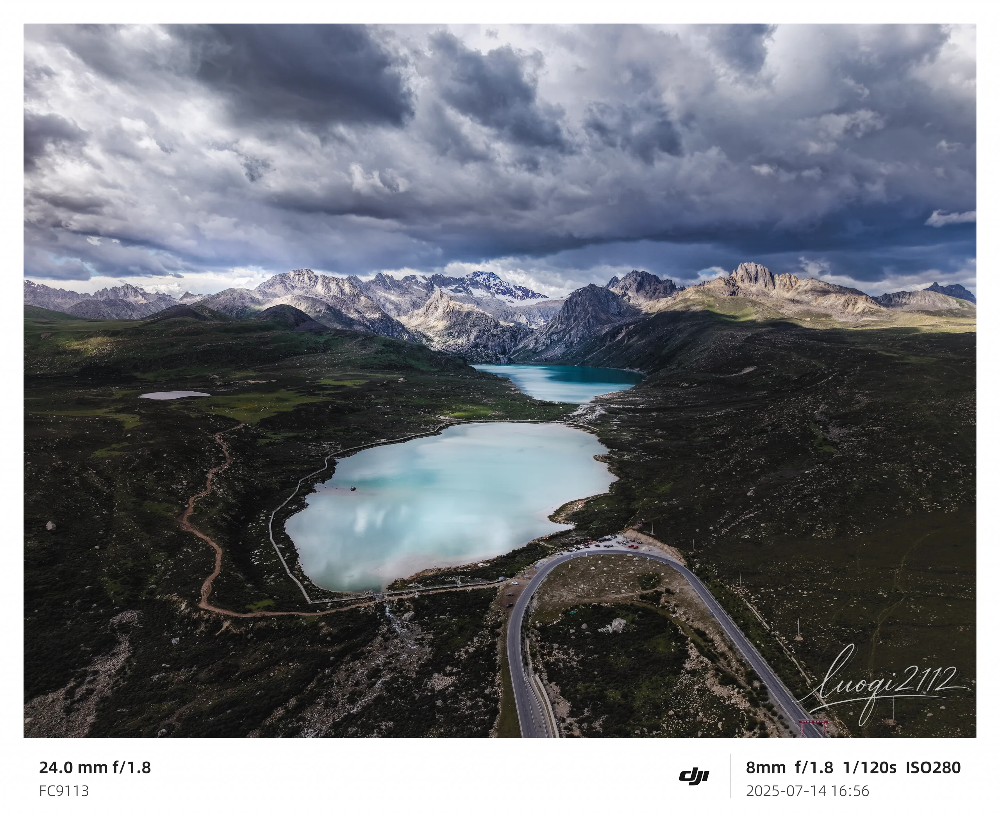
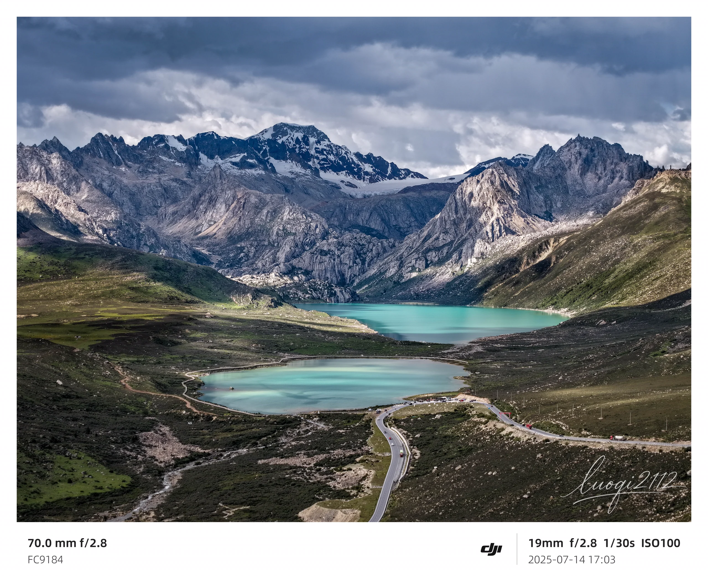
Ice & silence
在冰川面前，时间显得很慢
岩层、冰体和湖水把颜色压低，画面里只剩下缓慢而巨大的变化。 牦牛从湖岸经过，让尺度重新变得可以被理解。
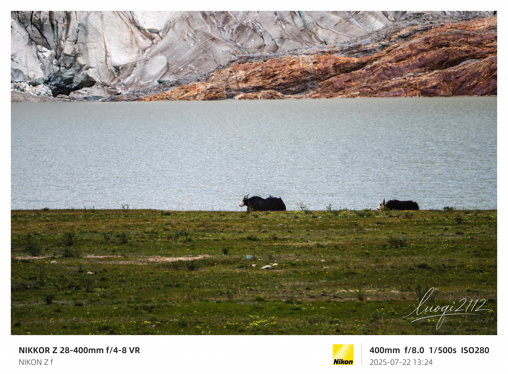
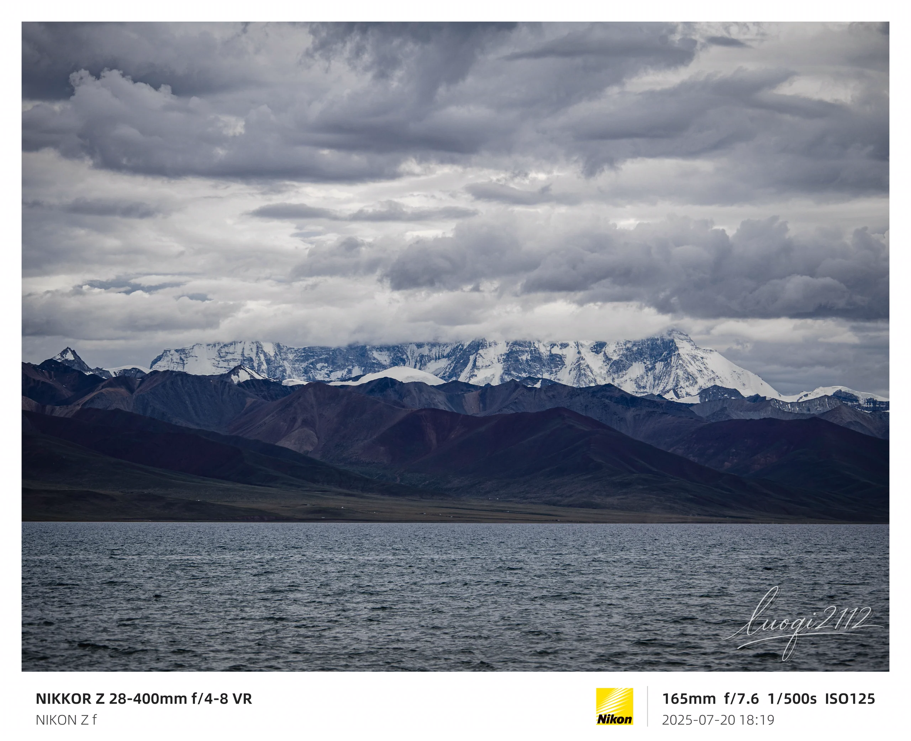
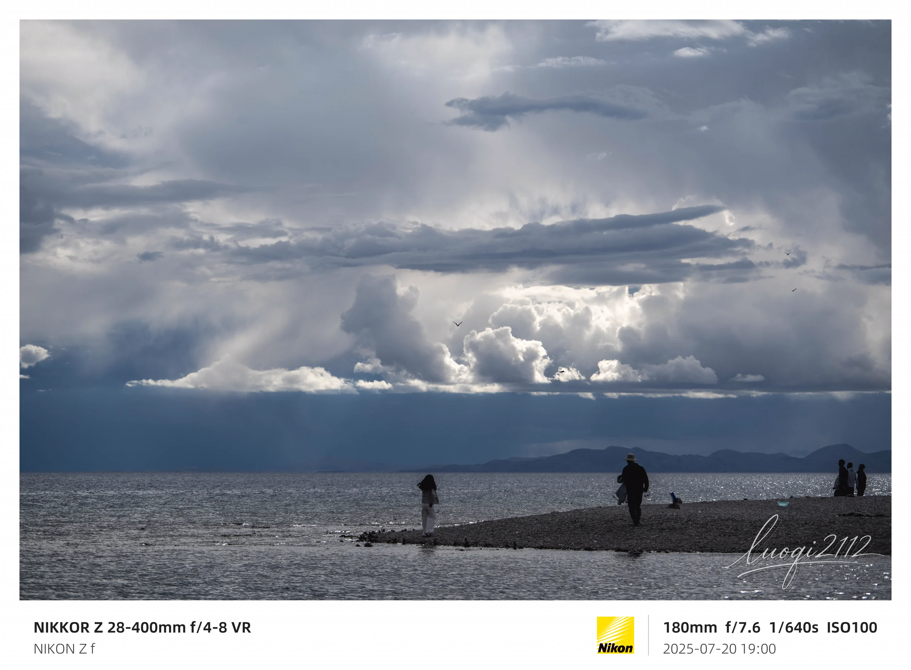
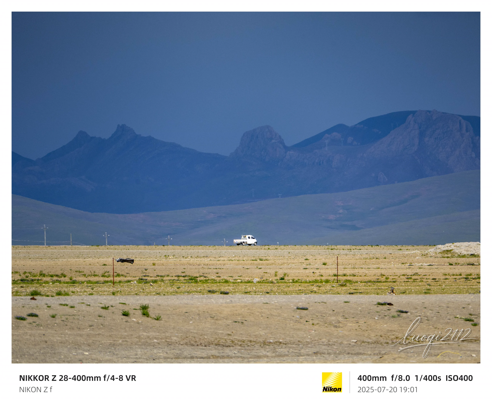
A mountain of red
色达：颜色沿着山势生长
密集的红色房屋从谷底一直延伸到坡面。远看是色块，靠近以后， 每一扇窗、每一条小路又重新变回具体的生活。
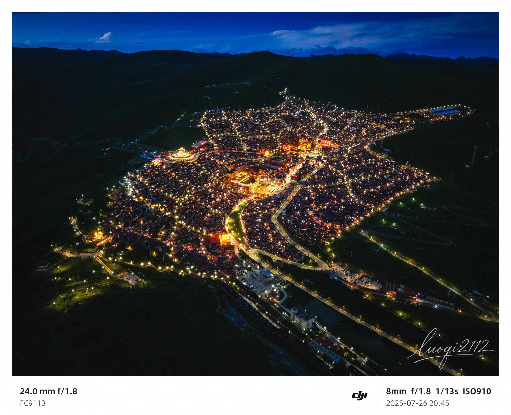
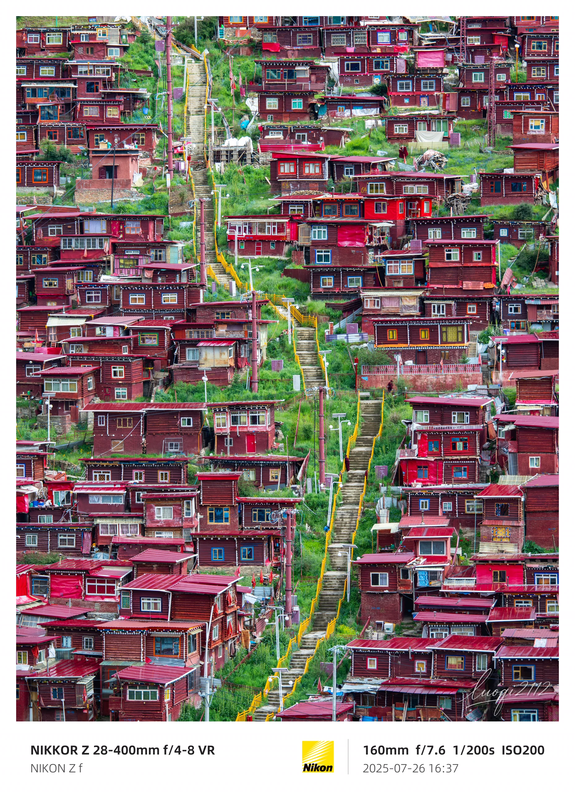
After the long road
抵达拉萨以后
白昼让建筑显出层次，夜色又把它收拢成一处遥远的光。 同一个地点，在一天的两端成为两张完全不同的照片。
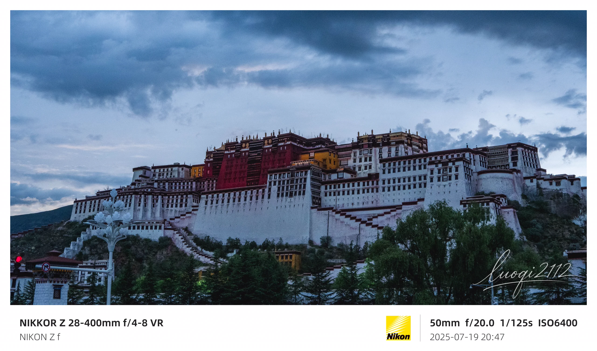
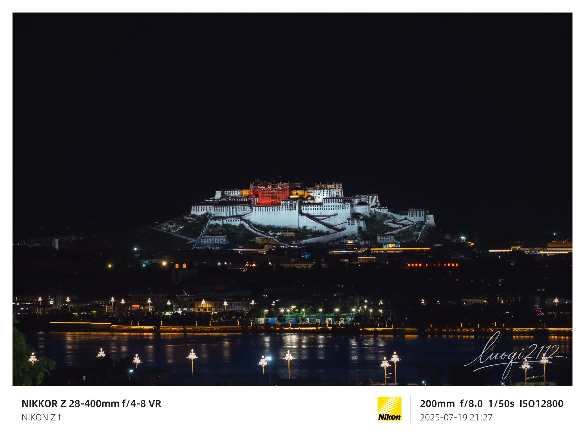
To be continued
这不是旅程的结尾，
只是第一轮整理。
十二张照片已经给出了地点、天气和光线，却还没有写下所有发生过的事。 等真实的记忆被补回来，这篇影像手记会继续生长。
查看全部摄影作品